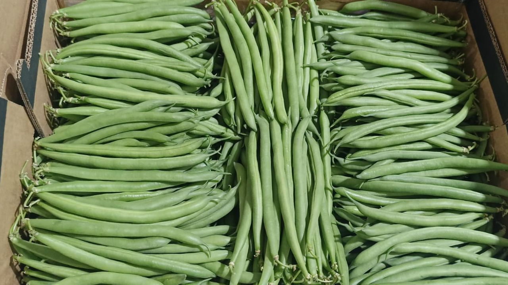
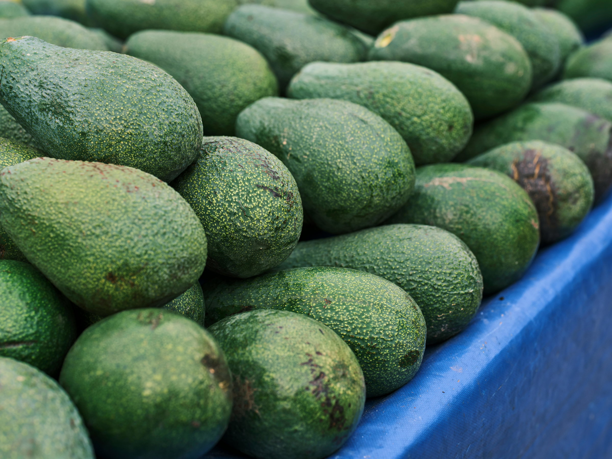
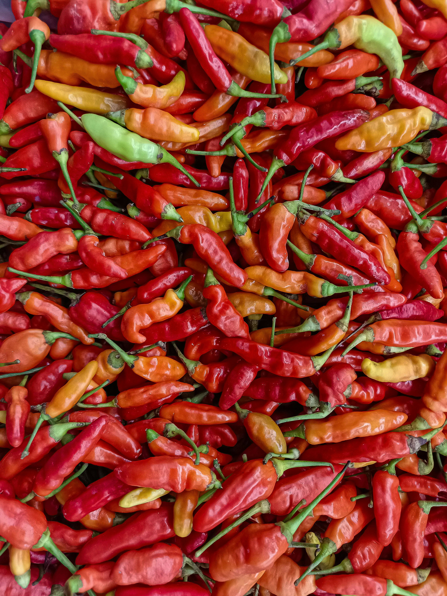
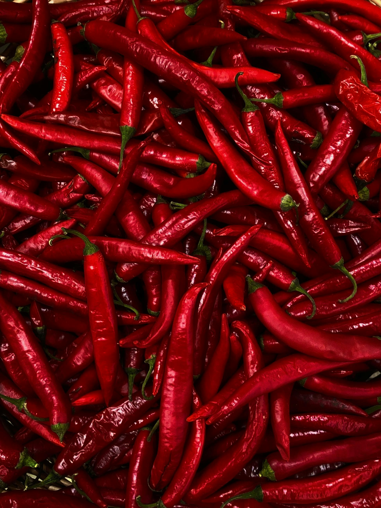
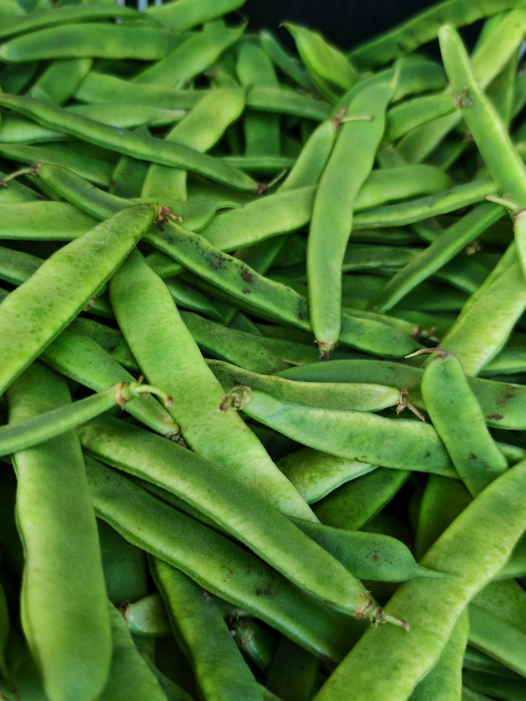
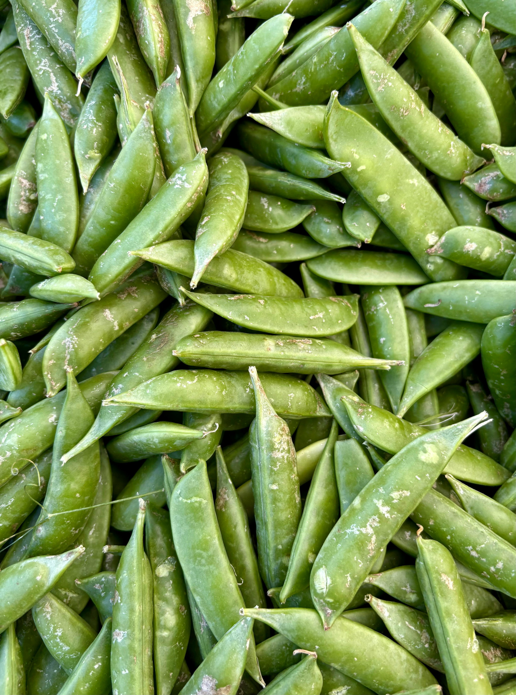
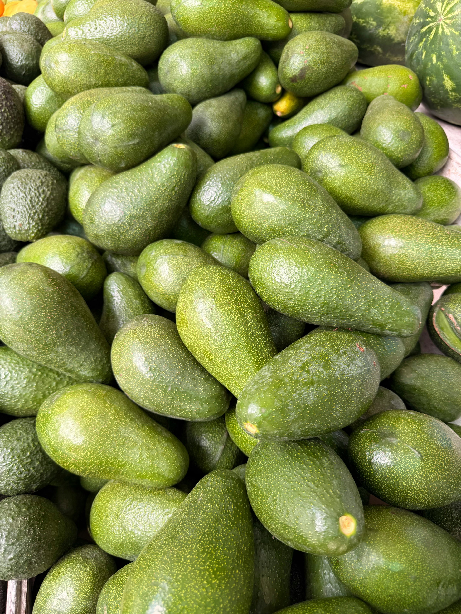
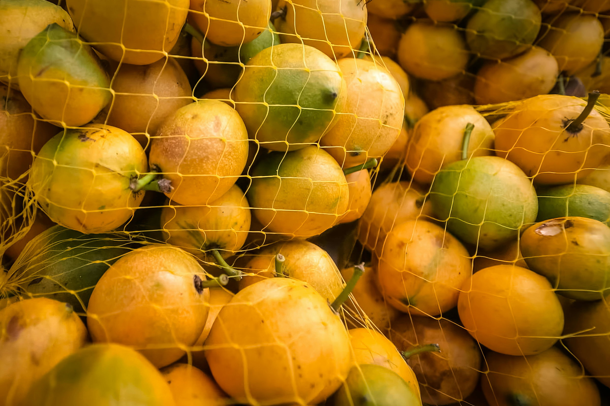
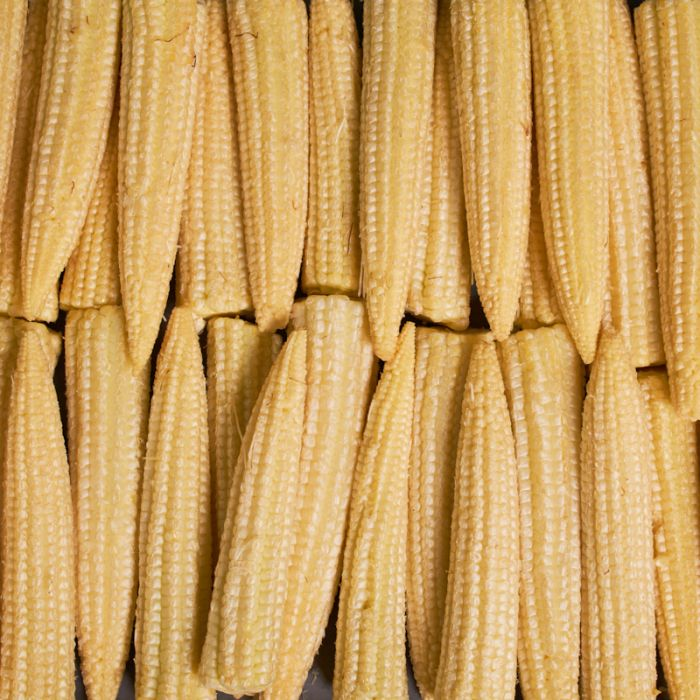

Sourcing & Origin Coordination
- Grower and partner identification
- Origin-side communication/alignment
- Product and supply opportunity screening
Export-Ready Fresh Produce Supply, Built with Origin Partners

What We Do
AgroTekton works with growers and origin-side partners in Sub-Saharan Africa to help turn suitable produce into export-ready supply for European buyers. Our role is practical: sourcing, coordination, requirement alignment, and support around the documentation and process steps that often decide whether supply is commercially usable or not.
Finding suitable growers and origin-side supply partners.
Helping align production, communication, and execution across actors.
Supporting the practical requirements needed for export processes.
Working toward supply that fits real European buyer expectations.
Fresh Produce Supply
We focus on the practical work needed to move fresh produce opportunities toward export readiness and commercial execution.
How We Work
From inquiry to delivery, each step is mapped: specs, QC, documentation, shipping handoff, and post-arrival follow-up.

Confirm product, spec, volumes, pack format, dates, Incoterm, destination.
Identify suitable growers/exporters/packhouses; confirm handling and pack-out capability.
Traceability, labeling, phytosanitary pathway, residue/MRL discipline.
Start with small trial shipments; scale only after repeat acceptance and on-time delivery.

Product Focus
We focus on commercially relevant fresh produce categories that fit structured export programs into Europe. The goal is not to offer everything, but to build repeatable supply around products that match buyer demand and practical origin-side capability.






About us
AgroTekton is a Hungary-based company focused on building direct commercial links between Sub-Saharan African producers and European fresh produce buyers. Our work centers on turning viable agricultural supply into structured, export-ready trade.
We operate at the origin level: identifying suitable growers and partners, supporting practical export requirements, and aligning supply with real buyer demand.
Alongside fresh produce trade, we also work on selected agro-industrial projects, including processing machinery and water treatment systems, through established European partners.
Get in touch
For supply opportunities, buyer requirements or origin-side cooperation, contact AgroTekton directly.
Email AgroTekton